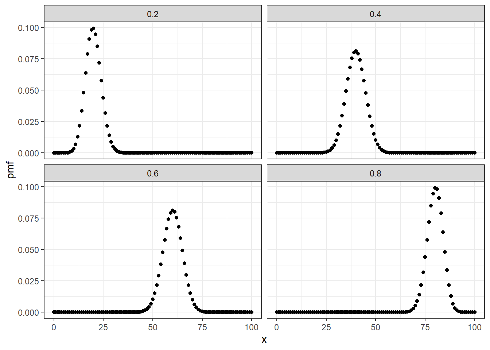

4 Estimators
An estimator is a mathematical function that takes data and gives you an estimate of something. While this course will mainly focus on numerical examples, I would like you to remember that we take in information, and use this information to make educated guesses about things all the time. For example, before I go grocery shopping, I have a peek into the fridge and decide how much food I will need to buy this week: an estimate. When I drive to work, I pay attention to the traffic conditions (i.e. data), in part so I have an estimate of how fast I should be driving. In what will follow, our analysis will look somewhat more formal than this, but be mindful that there are similarities: (i) we gather information and use it to make a prediction or guess about something, (ii) there are some ways of using the information that are more useful than others, (iii) some types of information are better than other types, (iv) if we know more about how we are gathering our information, we can sometimes use this to make a better guess, and (v) more information usually makes our guess more accurate.
The Frequentist approach in econometrics1 starts with the premise that there is a population parameter (or collection of parameters, the distinction is not important at all), say \(\theta\), that determines how we observe data. We observe a sample of data, say \(\{x_i\}_{i=1}^N\), and use this sample to produce an estimate of \(\theta\), the property of the population that we would like to know about. Our prime objective in econometrics is to estimate properties of the population, using a sample and an estimator.
As an example, suppose that you wish to estimate the probability that tossing a particular coin results in it landing heads up.2 You decide to model the data-generating process as follows:
\[ \begin{aligned} H_i&=\begin{cases} 1 &\text{if coin flip $i$ lands heads up}\\ 0 &\text{otherwise} \end{cases}\\ \Pr[H_i=1]&=\theta,\quad \theta\in[0,1]\label{eq:sampling:pr}\\ H_i&\sim iid \mathrm{Bernoulli}(\theta)\label{eq:sampling:formal} \end{aligned} \] Here the first line defines a random variable that can take on two values, 0 and 1 (we implicitly assume that the coin has exactly two sides, and so \(H_i\neq 1 \iff H_i=0 \iff \mathrm{tails}\)). The second line tells us that the probability of the coin flip coming up heads is equal to \(\theta\): this is the population parameter that we want to estimate. The third line formalizes this further, by (i) using the formal name for a coin-flip variable (Bernoulli), and (ii) formally stating the assumption that each coin flip is an independent draw from the same distribution.3 These are all statements about the population.
Now we collect a sample from this population. In this example, this could involve flipping the coin (say) 100 times, and recording the result of each coin flip. Let’s denote this sample as \(\{h_i\}_{i=1}^{100}\). This last bit of notation denotes the collection of coin flip outcomes for 100 coin flips. We could write this out long-hand as: \[\begin{align} \{h_i\}_{i=1}^{100} = \{h_1, h_2, h_3, \ldots, h_{99}, h_{100}\} \end{align}\] but we have better things to do (or at least I do).
At this point (and forever into the future) it is very important to be clear about when we are talking about properties of the sample and properties of the population. We will be using the former to tell us something about the latter, but they are two different things. \(\{h_i\}_{i=1}^N\), the sample, is the thing we will be importing into our statistical package, then calculating means, variances, etc. of. We know the sample mean because we can calculate it. We can never know the population mean: that’s why the sample is useful!
4.1 Estimators and the sampling distribution
We now take our sample, and stick it into our estimator. Out comes an estimate. Here’s the thing: our sample is random. If we put something random into a function, in general we should expect to get something random out. In the context of our coin-flipping example starting in this section, we have a sample of 100 coin flips, and wish to use this to estimate \(\theta\), the probability that our coin comes up heads. For a lot of reasons that we will get to later on, a good estimator to use in this situation is: \[\begin{align} \hat\theta &=\frac{1}{N}\sum_{i=1}^Nh_i \end{align}\] which happens to be the sample mean.4 Although it is not stated explicitly on the left-hand side of the above equation, \(\hat\theta\) is a function of the sample: \(\hat\theta = f\left(\{h_i\}_{i=1}^N\right)=\frac{1}{N}\sum_{i=1}^Nh_i\), but that is overly cumbersome, so we will stick with the notation \(\hat\theta\). We have also gone a bit more general, and written this for an arbitrary sample size \(N\), rather than our \(N=100\) observations in the above example.
Before exploring the properties of \(\hat\theta\) when \(N=100\), it is instructive to understand how \(\hat\theta\) behaves with stupidly small samples. Each row of the following Table shows a possible sample that we could have observed, if we only tossed the coin \(N=3\) times:
| \(h_1\) | \(h_2\) | \(h_3\) | \(\hat\theta\) | probability |
|---|---|---|---|---|
| 0 | 0 | 0 | \(0\) | \((1-\theta)^3\) |
| 0 | 0 | 1 | \(\frac13\) | \(\theta(1-\theta)^2\) |
| 0 | 1 | 0 | \(\frac13\) | \(\theta(1-\theta)^2\) |
| 0 | 1 | 1 | \(\frac23\) | \(\theta^2(1-\theta)\) |
| 1 | 0 | 0 | \(\frac13\) | \(\theta(1-\theta)^2\) |
| 1 | 0 | 1 | \(\frac23\) | \(\theta^2(1-\theta)\) |
| 1 | 1 | 0 | \(\frac23\) | \(\theta^2(1-\theta)\) |
| 1 | 1 | 1 | \(1\) | \(\theta^3\) |
The rightmost column shows the probability of observing that sample, as a function of the population parameter \(\theta\). Note that we pay attention to the order of coin flips, and hence we don’t think of the sample \(\{1,0,1\}\) as being the same as \(\{1,1,0\}\), even though they both have 2 heads and 1 tail. This is an important distinction for later on, but at the moment just be aware that there are \(2^3=8\) possible samples that we could have observed, with varying probability of being observed. That said, the sample mean doesn’t give a hoot about which order in which the heads and tails came, so we can add up the cells in the ``Probability’’ column of this Table to get the probability mass function of the sample mean, as a function of \(\theta\): \[\begin{align} \Pr[\hat\theta=x]&=\begin{cases} (1-\theta)^3 &\text{if }x=0\\ 3\theta(1-\theta)^2 &\text{if }x=1/3\\ 3\theta^2(1-\theta) &\text{if }x=2/3\\ \theta^3 &\text{if }x=1\\ 0&\text{otherwise} \end{cases}\label{eq:BernoulliHat3} \end{align}\] which characterizes the distribution of our estimator \(\hat\theta\), as a function of the population parameter \(\theta\). We call this the sampling distribution of \(\hat\theta\). If one can see the matrix when it comes to probability mass functions, one may realize this that we can write (\(\ref{eq:BernoulliHat3}\)) more compactly as: \[\begin{align} \Pr[\hat\theta=x]&= \begin{cases}\binom{3}{3x}\theta^{3x}(1-\theta)^{3(1-x)} &\text{if } x\in\{0,1/3,2/3, 1\}\\ 0&\text{otherwise} \end{cases} \end{align}\] which if you squint hard enough, looks {} like the Binomial distribution. In fact, if you substitute in \(k=3x\), this is exactly what you get: the number of heads for this sampling process is distributed \(\mathrm{Binomial}(3,\theta)\). For a sample size of \(N\), this generalizes to \(\mathrm{Binomial}(N,\theta)\). To illustrate this, The following figure shows the sampling distribution for the same estimator for a much more reasonable sample of \(N=100\) coin flips.
x=0:100
d<-(tibble(x=x,pmf = dbinom(x,100,0.2),theta=0.2)
%>% rbind(
tibble(x=x,pmf = dbinom(x,100,0.4),theta=0.4)
)
%>% rbind(
tibble(x=x,pmf = dbinom(x,100,0.6),theta=0.6)
)
%>% rbind(
tibble(x=x,pmf = dbinom(x,100,0.8),theta=0.8)
)
)
(
ggplot(data=d,aes(x=x,y=pmf))
+geom_point()
+theme_bw()
+facet_wrap(~theta)
)
As the sample size gets larger, there are more values that \(\hat\theta\) can take on. For example, when \(N=4\) we will get one of $=$0, 1/4, 2/4, 3/4, 4/4, and as \(N\) gets really large, we struggle to see that the distribution is still discrete. However note that since we are always taking a ratio of two integers, the number of heads divided by the sample size, there are some values of \(\hat\theta\) that we could never get: \(\frac{\pi}{4}\), for example.
Unfortunately, in general, the sampling distribution of an estimator is not easy to work out. Most of the time, however, we can determine a few properties of this distribution. In particular, we may be interested in knowing the expected value of \(\hat\theta\) (i.e.: “on average, do I get right number?”), the variance (i.e.: “how precise is my estimator?”), and how these things change with sample size (i.e.: “if my sample size gets bigger, how much better is my estimator?”). We explore some of these properties in the next section.
4.2 Small sample properties of estimators
While it is usually infeasible to determine the exact sampling distribution of our estimator, we can usually derive, or at least approximate (more on this later), some properties of its distribution. That is, we might not be able to write down the cdf of \(\hat\theta\), but we may be able to work out a few things, like its mean and variance. This is especially easy when our estimator is a sample mean, because we know a lot about sample means, and is particularly useful when there is more than one estimator that could do the job for you. If there is more than one option, it usually pays to think at least a bit about which one will work best for you.
To illustrate this, suppose for example that a friend of yours was rolling a fair die, and calling out the numbers. Your problem is that you don’t know how many sides the die has, and you would like to estimate it. Let \(\eta\) be the number of sides on the die. Your data \(\{k_i\}_{i=1}^N\) consists of the outcomes of the \(N\) die rolls that your friend has called out.5
Here are two estimators that you may want to consider:
- Noting that for an \(\eta\)-sided die, the expected value of a roll is \(E[k_i]=\frac{\eta+1}{2}\), you replace \(E[k_i]\) with its sample analog, \(\bar k=\frac{1}{N}\sum_ik_i\) and solve for \(\eta\): \[\begin{align} \hat\eta&=2\bar k -1, \quad \text{i.e.:}\ \bar k=\frac{\hat\eta+1}{2} \end{align}\]c{+1}{2} \end{align}
- Noting that the highest possible value of \(k_i\) that you could observe is \(k_i=\eta\), you use the maximum: \[\begin{align} \tilde\eta&=\max_i\{k_i\} \end{align}\]
Both of these take a property of the population (the mean and maximum respectively), and then use the* sample analog of this. Unsurprisingly, this is often referred to as an analogy estimation strategy.6 We will be introduced to some important properties of estimators below, in the context of \(\hat\eta\) and \(\tilde \eta\). Neither will come out as unambiguously better. Get used to it! If we (economists) assume people can make trade-offs, we’d better be able to make them ourselves. But before getting into this, suppose that you observed the following sample: \[\begin{align*} \{1,1,1,1,1,6\}\implies \quad \hat\theta=2\frac{11}{6}-1\approx 2.7,\quad \tilde\eta=6 \end{align*}\] One alarming property of \(\hat\theta\) (that is not discussed below) is that our estimate of 2.7, even if we round it up to the nearest integer, could not possibly be believable, because we observe a 6 in our sample! We would never run into this problem for \(\tilde\theta\).
4.2.1 Bias
While we have no guarantee that our estimator gives us the right number (i.e. \(\hat\theta=\theta\)) for sure, we can assess whether we get the right number {}. Specifically, we can compare \(E[\hat\theta]\) to \(\theta\). If they are equal, i.e.~\(E[\hat\theta]=\theta\), then we say that our estimator is unbiased. On the other hand, if \(E[\hat\theta]\neq\theta\), then our estimator is biased, and we might want to worry.
Now let’s evaluate the properties of our estimators \(\hat\eta\) and \(\tilde \eta\) described earlier. For the estimator based on the population mean: \[\begin{align} E[\hat\eta]&=E\left[2\bar k-1\right]\\ &=2E[\bar k] -1\\ &=2E\left[\frac{1}{N}\sum_{i}k_i\right]-1\\ &=\frac2N\sum_iE[k_i]-1\\ &=\frac{2}{N}NE[k_i]-1\\ &=2E[k_i]-1\\ &=2\frac{\eta+1}{2}-1\\ &=\eta \end{align}\] In short, \(E[\hat\eta]=\eta\iff \hat\eta\) is unbiased. Good! In expectation (loosely: “on average”) we get the right number.
Now let’s look at the estimator based on the maximum: \[\begin{align} E[\tilde\eta]&=E[\max_ik_i] \end{align}\] This opens up a bit more of a can of worms, because now we need to take an expectation over the maximum of the \(k_i\)s in our sample. Welcome to the wonderful world of order statistics! Specifically, the first order statistic (i.e. the maximum of a sample). We first need to derive the distribution of \(\max_ik_i\). Let \(M\) be this maximum, to make notation easier. What is the probability that \(M\) is equal to a particular value \(m\)? That is, what is the pmf of \(M\)? \[\begin{align} p(m)&=\Pr[N-1\text { observations are less than or equal to } m \nonumber \\ &\quad\quad\quad\quad \text{ and at least one is equal to } m]\\ &=\binom{N}{1}\left(\frac{m}{\eta}\right)^{N-1}\frac{1}{\eta}=\frac{Nm^{N-1}}{\eta^N} \end{align}\] if \(m=1, 2, 3,\ldots,\eta\), and zero otherwise. We can now take the expectation of \(M\): \[\begin{align} E[\tilde\eta]=E[M]&=\sum_{m=1}^\eta\left[m\frac{Nm^{N-1}}{\eta^N}\right]\\ &=\frac{N\eta}{N+1}\sum_{m=1}^\eta\left[\frac{(N+1)m^{N+1-1}}{\eta^{N+1}}\right]\\ &=\eta\frac{N}{N+1}\label{eq:biasEtaTilde} \end{align}\]
Where the last line follows by noting that the thingy that we are summing is the pmf of \(M\), if we have one extra observation in our sample, and so it must sum to 1. Remember this monkey trick, it will come in handy! Inspection of the previous equation yields some sad news: \(\tilde\eta\) is biased. On average we will under-estimate \(\eta\) by the fraction \(\frac{N}{N+1}\). This should not be too surprising: For any sample size, there is a non-zero probability that the maximum is not equal to \(\eta\), and so some of the terms in the above expectation calculation put positive weight on outcomes that are less than \(\eta\). Further inspection of this and a bit of thinking (!), however, shows that all is not lost. Firstly, as our sample size gets large, \(\frac{N}{N+1}\to 1\), and so the bias disappears. This is a common property of many (but by no means all) biased estimators, and may be why we might prefer one to an unbiased estimator if we think our sample size is large enough. Secondly, since the bias is only a function of \(N\), we can easily correct for this by multiplying the maximum by \(\frac{N+1}{N}\), that is:
\[\begin{align} \check\eta&=\frac{N+1}{N}\max_ik_i=\frac{N+1}{N}\tilde\eta\\ E[\check\eta]&=E\left[\frac{N+1}{N}\tilde\eta\right]=\frac{N+1}{N}E[\tilde\eta]=\frac{N+1}{N}\frac{N}{N+1}\eta=\eta \end{align}\] By deriving the bias of this estimator we were not only able to say something about the direction of the bias (i.e.~\(\tilde\eta\) under-estimates the population parameter on average), but we also came up with another one that was unbiased! You should probably remember that.
4.2.2 Variance
If our estimator is unbiased, or at least if the bias is something that we can cope with, the next question we might ask is: how precise is our estimator? That is, through the sampling process, do our estimates all fall nice and close to their mean, or are they all over the place? We typically use variance to evaluate this. After checking bias, we found that while \(\hat\eta\) was the only unbiased estimator in consideration, we could easily correct the bias in \(\tilde\eta\). Therefore this should be the next thing to check in our die-rolling example. Firstly, for \(\hat\eta:\)
\[\begin{align} V[\hat\eta]&=V\left[2\bar k-1\right]\\ &=\frac{4}{N}V[k_i],&\quad\text{(assumed independence here)}\\ &=\frac{4}{N}\frac{\eta^2-1}{12}\\ &=\frac{\eta^2-1}{3N}\label{eq:varianceHatEta} \end{align}\]
Inspection of this tells us a few things. Firstly, if \(\eta=1\), then \(V[\hat\eta]=0\). This should not be surprising, but it is comforting: if we have a one-sided “die”, then we will always get the same number, and hence have zero variance. Perhaps of more use is that the variance is (i) increasing in \(\eta\), and (ii) decreasing in \(N\). (ii) is typical of almost anything you will end up using, and loosely can be interpreted as “bigger samples are better”.
Now let’s move to our second estimator, \(\tilde\eta\). For reasons that should become obvious after you do this over and over again, we are going to use the relationship \(V[X]=E[X^2]-E[X]^2\). In case they are not obvious now, these reasons are (i) we already know \(E[X]\), and (ii) it is easier to evaluate \(E[X^2]\) on its own than try to do \(V[X]\) in one fell swoop. \[\begin{align} E[\tilde\eta^2]&=E\left[M^2\right]\\ &=\sum_{m=1}^\eta\left[m^2\frac{Nm^{N-1}}{\eta^N}\right]\\ &=\sum_{m=1}^\eta\left[\frac{Nm^{N+1}}{\eta^N}\right]\\ % &=\frac{N\eta^{N+2}}{\eta^N(N+2)}\sum_{m=1}^N \left[ \frac{(N+2)m^{N+1}}{\eta^{N+2}} \right]\\ &=\eta^2\frac{N}{N+2}\\ V[\tilde\eta]&=\eta^2\left[\frac{N}{N+2}-\left(\frac{N}{N+1}\right)^2\right]\\ &=\eta^2\frac{N^3+2N^2+N-N^3-2N^2}{(N+2)(N+1)^2}\\ &=\frac{N\eta^2}{(N+2)(N+1)^2} \end{align}\] as with \(\hat\eta\), the variance of \(\tilde\eta\) decreases as sample size increases. To see this, note that we have \(N\) in the numerator, and a cubic in the denominator, so the denominator grows much faster.
But which of \(\hat\eta\) and \(\tilde\eta\) is better based on variance? It turns out that for almost all reasonable values of \(\eta\) and \(N\), \(V[\tilde\eta]<V[\hat\eta]\), which can be shown as follows: \[\begin{align} \frac{V[\tilde\eta]}{V[\hat\eta]}&=\frac{N\eta^2}{(N+2)(N+1)^2}\times\frac{3N}{\eta^2-1}\\ &=\frac{N\eta^2}{(N+2)(N^2+2N+1)}\times\frac{3N}{\eta^2-1}\\ &=\frac{N\eta^2}{N^3+2N^2+N+2N^2+4N+2}\times\frac{3N}{\eta^2-1}\\ &=\frac{N\eta^2}{N^3+4N^2+5N+2}\times\frac{3N}{\eta^2-1}\\ &=\frac{\eta^2}{N+4+5/N+2/N^2}\times\frac{3}{\eta^2-1} \end{align}\] which \(\to 0\) as \(N\to\infty\). Furthermore, the denominator in the first fraction is at least 5, so we can say that: \[\begin{align} \frac{V[\tilde\eta]}{V[\hat\eta]}&<\frac{3\eta^2}{5(\eta^2-1)} \end{align}\] and when is this fraction less than one? \[\begin{align} \frac{3\eta^2}{5(\eta^2-1)}&\leq 1\\ 3\eta^2&\leq5\eta^2-5\\ 5&\leq 2\eta^2\label{eq:etaTildeVNeq}\\ \eta&\geq 2 \end{align}\]
Note that the mathematical solution to the above equation is \(\eta\in(-\infty,-\sqrt{2.5}]\cup[\sqrt{2.5},\infty)\), however we can discard the negative part of this because our die can only take on positive numbers, and we can round up the lower bound of \(\sqrt{2.5}\) to 2 because our die has an integer number of sides. Hence \(\eta\geq 2\) is the econometric solution to the problem. In short, \(\tilde\eta\) has a smaller variance than \(\hat\eta\), as long as we don’t have a one-sided die.
4.2.3 Mean squared error
A small variance is a good thing, but only if the estimator’s distribution is centered (at least roughly) around the true value. That is, if the estimator is substantially biased, why should be care that the variance is small? We shouldn’t! To see this, let’s construct a silly but illustrative example. Suppose that you can use estimators for population parameter \(\theta\) with the following sampling distributions:7 \[\begin{align} \Pr[\hat\theta=x]&=\begin{cases} 1 &\text{if } x = 2\\ 0 &\text{otherwise} \end{cases}\\ \Pr[\tilde\theta = x]&=\begin{cases} \frac{1}{5}&\text{if } x\in\{\theta-2,\theta-1,\theta,\theta+1,\theta+2\}\\ 0&\text{otherwise} \end{cases} \end{align}\] The first estimator \(\hat\theta\) returns an estimate of 2 no matter what data we get. This should look like a silly choice, but \(\hat\theta\) {} have the following desirable property: \(V[\hat\theta]=0\). If we were to judge estimators based only on their variance, we could do no better than \(\hat\theta\)! The problem with this estimator is that it is biased: \(E[\hat\theta]=2\neq\theta\) (unless the true value \(\theta\) is also equal to 2, but we can’t know that). \(\tilde\theta\), on the other hand, is unbiased, because: \[\begin{align} E[\tilde\theta]&=\sum_{k=-2}^2\frac{\theta+k}{5}=\theta \end{align}\] but has a non-zero (hence realistic) variance of: \[\begin{align} V[\tilde\theta]&=\sum_{k=-2}^2\frac{1}{5}(\theta+k-\theta)^2=\frac15(2^2+1^2+0^2+1^2+2^2)=\frac{10}{2}=5 \end{align}\] One useful measure to use in these cases is mean squared error (MSE). Unlike variance, which asks how far away (in terms of squared distance) on average is an estimator from its expected value, MSE asks how far away our estimator is from its true value. Let’s put these side-by-side to see the difference: \[\begin{align} V[\hat\theta]&=E\left[\left(\hat\theta-E[\hat\theta]\right)^2\right]\label{eq:MSEV}\\ MSE[\hat\theta]&=E\left[\left(\hat\theta-\theta\right)^2\right]\label{eq:MSE} \end{align}\] Comparing the two, note the only difference is that for the MSE equation, we replace the expected value of the estimator, \(E[\hat\theta]\), with population parameter that we are trying to estimate, \(\theta\). Hence, these two things will be equal if and only if \(E[\hat\theta]=\theta\). To see the “only if” part of this, we can decompose MSE as follows: \[\begin{align} MSE[\hat\theta]&=E\left[\left(\hat\theta-\theta+E[\hat\theta]-E[\hat\theta]\right)^2\right]\\ &=E\left[\left(\left(\hat\theta-E[\hat\theta]\right)+\left(E[\hat\theta]-\theta\right)\right)^2\right]\\ %%%%% &=E\left[\left(\hat\theta-E[\hat\theta]\right)^2\right] +E\left[\left(E[\hat\theta]-\theta\right)^2\right] +2E\left[\left(\hat\theta-E[\hat\theta]\right)\left(E[\hat\theta]-\theta\right)\right]\label{eq:MSEtempZero}\\ &=V[\hat\theta]+\mathrm{Bias}^2[\hat\theta]+0 \end{align}\] The third term in this expression is equal to zero because \(E[\hat\theta]\) and \(\theta\) are constants, and \(E\left[\hat\theta-E[\hat\theta]\right]=0\). Hence the MSE of an estimator is equal to the estimator’s bias squared plus its variance. How well do our estimators \(\hat\eta\) and \(\tilde\eta\) from the previous section stack up based on MSE? Using this formula, we already have the hard part done: \[\begin{align} MSE[\hat\eta]&=\frac{\eta^2-1}{3N}+0\\ MSE[\tilde\eta]&=\frac{N\eta^2}{(N+2)(N+1)^2}+\eta^2\left(\frac{1}{N+1}\right)^2\\ &=\eta^2\frac{2N+2}{(N+2)(N+1)^2}\\ &=\eta^2\frac{2}{(N+2)(N+1)} \\ \frac{MSE[\tilde\eta]}{MSE[\hat\eta]}&=\eta^2\frac{2}{(N+2)(N+1)}\times\frac{3N}{\eta^2-1}\\ &=\frac{\eta^2}{\eta^2-1}\times\frac{6}{(N+2)(1+1/N)} \end{align}\] This leads to some ambiguity, but none that can’t be dealt with with a bit of thinking. To begin with, the fraction \(\frac{6}{(N+2)(1+1/N)}\to 0\) as \(N\to\infty\), so as long as our sample is large enough we should probably use \(\tilde\eta\). Additionally, the first term \(\frac{\eta^2}{\eta^2-1}\) is reasonably close to 1 for any integer greater than about \(\eta=3\),8 so we need not fret too much about it.
4.3 Exercises
4.3.1 Modeling a random probability
Consider the distribution studied in Exercise (with the same name) in a previous chapter. \[ \begin{aligned} F_X(x)&=\begin{cases} 0 &\text{if } x\leq 0\\ x^\alpha &\text{if } 0<x<1\\ 1 &\text{if } x\geq 1 \end{cases} \end{aligned} \]
Suppose that you have an iid sample \(\{X_i\}_{i=1}^N\) drawn from this distribution, and consider the following estimators for the parameter \(\alpha\): \[ \begin{aligned} \hat\alpha&=\frac{\frac1N\sum_{i=1}^NX_i}{1-\frac1N\sum_{i=1}^NX_i}\\ \tilde\alpha &=-\frac{1}{\frac{1}{N}\sum_{i=1}^N\log(X_i)} \end{aligned} \]
Explain how these estimators relate to your answers to the Exercise in the previous chapter.
Download the dataset
ExBetaSim_1.csvfrom the data folder, which contains a simulated sample from this distribution. Use both estimators to estimate \(\alpha\).Plot the cdf implied by your estimates, and also show the “empirical cumulative density function” of your data, which you can do in
ggplot2usingstat_ecdf.(Simulation exercise) Fix \(\alpha = 0.7\). Simulate some properties of these estimators for a sample size of \(N=30\). Are the estimators biased? Does one stand out as better than the other? Hint: You can simulate the distribution of \(X\) by transforming uniform random numbers. Specifically, if \(U\sim\mathrm U[0,1]\), then:
\[ X = U^\frac{1}{\alpha} \]
will have the correct distribution.
4.3.2 Exponential distribution
The exponential distribution can be characterized by the pdf: \[\begin{align} f_X(x) &= \begin{cases} \mu^{-1}\exp(- x/\mu)&\text{if }x>0\\ 0&\text{otherwise} \end{cases} \end{align}\] where \(\mu>0\) is a scale parameter. This distribution has the following properties: \[\begin{align} E[X^k]&=k!\mu^k\label{eq:exExpMoments} \end{align}\] \[\begin{align} X_i\sim iid\mathrm{Exponential}(\mu)\implies\min\{X_1, X_2, X_3,\ldots,X_N\}&\sim \mathrm{Exponential}(\mu/N) \end{align}\] We could plug in \(k=1\) to the first property, and use: \[\begin{align} \hat\mu &= \frac{1}{N}\sum_{i=1}^NX_i,\quad& \text{analogy of: }\mu=E[X] \end{align}\] Alternatively, we could use the second property to construct the estimator: \[\begin{align} \tilde \mu&= N\min_i\{X_i\},\quad& \text{analogy of: }\frac\mu N =E\left[\min_i\{X_i\}\right] \end{align}\]
- Derive the bias, variance, and MSE of these two estimators. Which one would you prefer to use? Hint: use the first property extensively!
- Download the datset
ExExponential_1.csvfrom the data folder and estimate \(\mu\) using both \(\bar\mu\) and \(\hat\mu\) - (Simulation exercise) Simulate the properties of both estimators when \(\mu=1\) and \(N=30\). Your answer should include your approximation of the bias, variance, and MSE of the estimators, as well as a plot showing the pdfs of both estimators. Hint: If \(U\sim U[0,1]\), then \(X=-\mu\log U\sim \mathrm{Exponential}(\mu)\)
- (Simulation exercise) In principle, you could have plugged any \(k\) into the equation \(E[X^k]=k!\mu^k\) to get an analogy estimator. plug in \(k=1\) and derive the analogy estimator. Don’t try to work out the bias, variance, and MSE of this analytically, just modify your code to also simulate the properties of this third estimator, say \(\check\mu\).
Statistics and econometrics can be divided into two philosophies: Frequentist and Bayesian. This is a course in Frequentist econometrics. Whenever econometrics is mentioned without clarifying whether it is Frequentist or Bayesian, it is usually safe to assume Frequentist.↩︎
It is at this point that I feel some need to apologize for a seemingly endless string of examples involving coin flipping. There are many reasons for my choice of this type of example. Most importantly, coin-flip random variables (formally: Bernoulli random variables), are very simple to understand. Because of this, they allow for introduction of simple concepts, without the need for you to get your head around anything else that could be complicated. Additionally, coin-flip variables show up everywhere: get used to it. ↩︎
The “independent” part of this means (among other things) that if I toss two coins, knowing the outcome of one tells me nothing about whether the other outcome is heads or tails. While for practical reasons we might not give a hoot about whether the \(H_i\)s are independent, we usually need to make an assumption about this when we estimate things. It is best to state it (and any other assumption we make) formally. That way, it is more obvious when we are doing something stupid.↩︎
and here is one of the first good reasons to use this: we know a lot about sample means, so we can use them to derive properties of this estimator. More on this later.↩︎
At this point, you may be telling me “But James, almost all dice are 6-sided, and there are a few 20-sided dice out there, but it’s really hard to get your hands on a 42-sided die. Isn’t this some information that we shouldn’t be ignoring?” To which my response would be: “Yes, go and learn Bayesian econometrics.”↩︎
Analogy estimators are reasonably easy to come up with, but there is no guarantee that they have any nice properties. Later on you will learn about maximum likelihood (ML) estimation, which is a systematic way to come up with an estimator that has some very nice properties. Another example of this is a Generalized Method of Moments (GMM) estimator.↩︎
Note here that I have abstracted away from the sampling process and just written down a probability distribution for each estimator. In the background, there may be a function taking data and returning an estimate, but this is unnecessary for the example. If you prefer, you can think about these as signals containing information about \(\theta\) (which is pretty much what an estimator is, anyway).↩︎
“Close” is a judgment call on my part, but plug in some numbers an see for yourself.↩︎